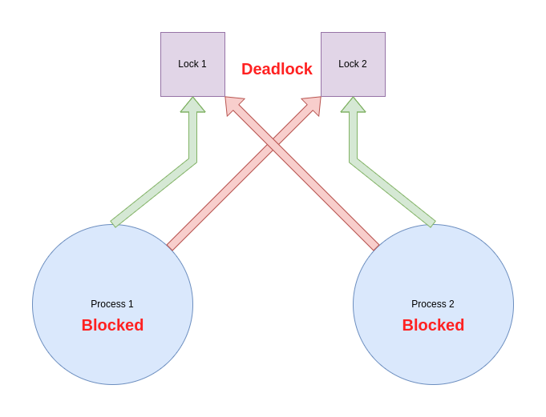

A deadlock is a state in which each member of a group waits for another member, including itself, to take action, such as sending a message or more commonly releasing a lock. (Wikipedia)
Visualization

Simple example
Deadlock Detector
Triggers only if all goroutines are deadlocked
Why do deadlocks happen?
Concurrency
Locking
Data Races
Race Detector
Channels example
Debug Tools
https://github.com/google/pprof
https://github.com/maruel/panicparse
Good Practices
Don't send and receive to the same channle in the same goroutine
Don't take a read lock twice in the same goroutine